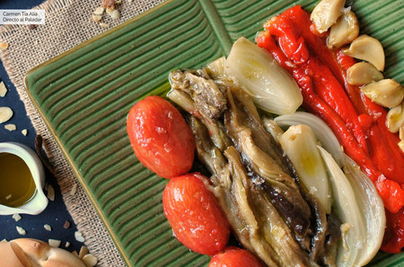

Escalivada

Description
Catalonians eat this dish as a first course or as an accompaniment to meats
Ingridients
- 4 small eggplants
- 4 spring onions or large scallions
- 4 red bell peppers
- 2 tomatoes
- Extra virgin olive oil for brushing, plus 1/3 cup
- 2 cloves garlic, thinly sliced
- Salt
Steps
- Prepare an oven - 260 C
- Brush the eggplants, onion, bell pappers, and tomatoes with olive oil. Arrange the vegetables on a rimmed baking sheet or in a roasting pan and roast, turning every 10 min, for 20 minutes, or until the skins blacke and the vegetables are tender
- Remove the vegetables from the oven and slip into one or more plastic bags, and let cool for about hour
- Unwrap the vegetables. Peel the eggplants, peppers, and tomatoes and peel away outer layer of the onions. Split the bell peppers in half, discard the seeds and stems, and cut lengthwise into strips. Transfer to a bowl. Trim the stems from the eggplants and core the tomatoes, and then cut them into strips of the same size as the papper strips and add to the bowl. Trim the onions, cut into rings, and add to the bowl along with the garlic
- Add the 1/3 cup olive oil, season with salt, and toss to mix well. Serve at room temperature